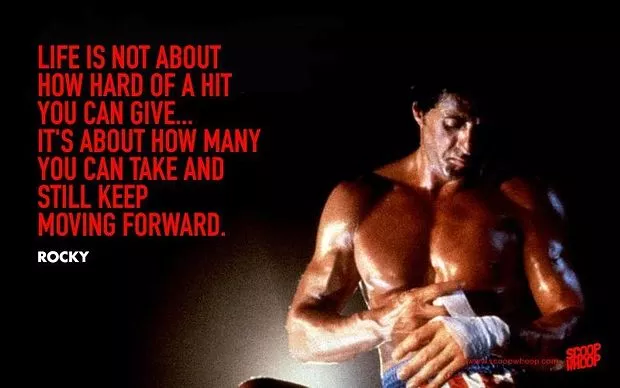
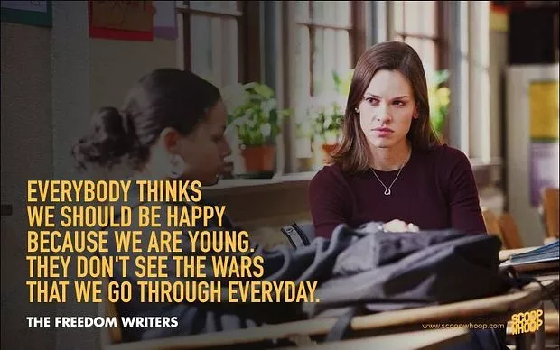
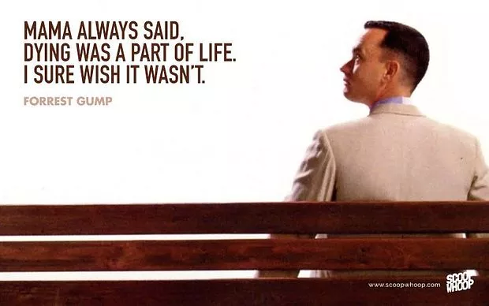

They make us laugh, they make us cry, they even make us cheer! When we see underdogs take on extraordinary goals, despite all adversities and difficulties, we can relate to them. We all need inspiration. Dealing with neck to neck competition in the modern era, sometimes we get tired of trying and want to give up. But movies these make us look inside ourselves and, often, can be used as inspiration themselves. So to that end, here's a list that is not just any casual evening watch. These 20 movies are sure to motivate us, inspire us and stick with us long after the ending scenes.
The Shawshank Redemption tells the tale of banker Andy Dufresne's 19-year term in prison. The film gives a strong message of friendship and perseverance and lets us have an insight of the lives at Shawshank. The film just doesn't end with innocent Andy's escape but also his mate, Red's redemption making it an inspiring story of hope, faith and bonding.

The story of Rocky Balboa is not just of boxing, but of struggle and hard work. The difficulties of daily life that he struggles to earn for, his relationship with his best friend's sister and the formation of his career are all well-knit parts of the plot, and this overall view of his life is what makes the movie so special. This story of a man, who from a 'nobody' becomes a 'somebody' is truly an all-time inspiring watch.

The story of Erin Gruwell faced with a class of at-risk teenagers deemed to be incapable learners is a must-watch! The plot of how a teacher can affect the lives of her students in a positive way is brought out as Gruell encourages her students to choose definitive careers for the future and inculcate good habits in them like keeping journals. This film reeks the message of motivation, and is inspiring both for teachers and students.

Whether dominating on the gridiron as a college football star, fighting in the Vietnam war, or captaining a shrimp boat, Forrest leaves an impression on people with his childlike innocence. Growing up under the care of his supportive mother in a protected environment, slow witted Forrest never considered himself disadvantaged. He tried to make people around him happy in his own small way but becomes puzzled while saving Jenny, his childhood sweetheart. The film emanates the sentiment of innocence and love, making us grateful for the simple joys of life.
.jpg)